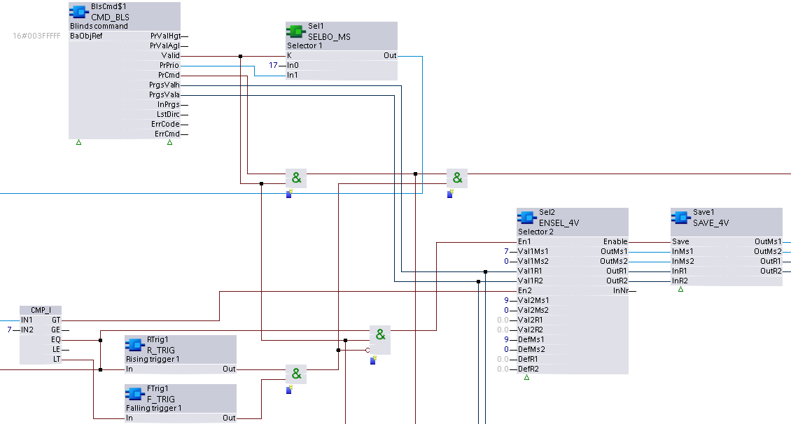

CMD_BLS：命令百叶窗
CMD_BLS 用于命令单个盲输出对象。 CMD_BLS can command, at a particular priority, the Control command property (control-command commanding) or the Present value property (target state commanding). CMD_LGT 还用于根据需要释放优先级。
CMD_BLS 读回仲裁的当前值（结构：高度、角度）和当前命令属性，以及当前优先级、状态标志和可靠性。 CMD_BLS 可以选择查询 Priority 数组属性的指定优先级以查看它是否正在使用。 CMD_BLS 还读取其他必需的属性，这些属性提供有关百叶窗执行器的状态和进度的信息。
Compatible data points:
- Blind output [BlsOut]
参考data point objects有关 BACnet 数据点的详细说明。
Required properties:
- Present value (structure: Height, Angle)
- Progress value (structure: Height, Angle)
- Control command
- Present command
- Present priority
- State flag
- In process
- Last moving direction
Operate with priorities
该功能块使用 2 种方法来控制是否按优先级运行：
1. 独占控制（计划优先级 1...5、9...12、14...16）
- Only one command source is permitted for a data point priority.
- A function block on a project can command this priority.
- An input set of a function block can command this priority.
- The function block commands the priority anew or releases it if a priority is used from a function block and another commanding source changes this priority.
- For target state command if priority is released or value changed.
- For control command if priority is released.
2. 最后胜利控制（计划优先级7、8、13）
- Multiple, command sources can use the same priority.
- The last commanded value (release) remains on the priority until a new command is performed by one of the commanding sources.
| 专属控制 | 最后获胜控制权 |
|---|---|---|
工厂启动时的行为 | [EnIn1] = 0 | [EnIn1] = 0 |
[EnIn1] = 1 | [EnIn1] = 1 | |
命令流程 | 如果[EnIn1]从0变为1。 | 如果[EnIn1]从0变为1。 |
如果 [EnIn1] = 1 且 [ValhIn1] 或 [ValaIn1] 或 [OpIn1] 或 [PosNrIn1] 或 [HgtIn1] 或 [AglIn1] 发生变化。 | 如果 [EnIn1] = 1 且 [ValhIn1] 或 [ValaIn1] 或 [OpIn1] 或 [PosNrIn1] 或 [HgtIn1] 或 [AglIn1] 发生变化。 | |
如果 [EnIn1] = 1 且 [RptcIn1] = 1。 | 如果 [EnIn1] = 1 且 [RptcIn1] = 1。 | |
发布 | 如果[EnIn1]从1变为0。 | 如果[EnIn1]从1变为0。 |
如果 [EnIn1] = 0 且 [RptcIn1] = 1。 | 如果 [EnIn1] = 0 且 [RptcIn1] = 1。 | |
来自其他来源的命令时的行为 | [EnIn1] = 0 | [EnIn1] = 0 |
[EnIn1] = 1 | [EnIn1] = 1 |
数据点定期将优先级 8 的值保存到控制器内存中。断电后，该值将在属性“优先级数组”中恢复，并由数据点进行评估。所有其他优先级不会保存到控制器内存中。
与功能块其他输入组的操作（[EnIn2]...[EnIn4]、[ValhIn2]...[ValhIn4]、[ValaIn2]...[ ValaIn4]、[OpIn2]...[OpIn4]、[PosNrIn2]...[PosNrIn4]、[HgtIn2]...[HgtIn4]、[AglIn2]...[AglIn4]、 [RptcIn2]...[RptcIn4]) 是相同的。
Pin description (inputs)
BaObjRef | |
|---|---|
BA-Object reference 结构 [BaObjRef] 定义 XFB 和 BACnet 对象之间的绑定连接。绑定会自动发生。 手动配置尝试是不必要的，并且可能会导致系统错误。 | |
DeviceId | 设备标识符 双字（默认值：16#3FFFFF） [DeviceId] 在单个标识符中包含对象类型和对象实例。 它用于识别设备对象：本地或远程。本地设备对象也可以通过值 16#3FFFFF 来标识。 |
ObjectId | 对象标识符 双字（默认值：16#3FFFFF） [ObjectId] 在单个标识符中包含对象类型和对象实例。 它用于识别设备内的对象。 |
ItemId | 物品标识符 整数（默认值：-1） [ItemId] 表示功能视图节点对象中的项目索引，它引用 BACnet 对象。 [ObjectId] 和 [ItemId] 一起定义对 BACnet 对象的间接访问引用。 值-1表示使用直接绑定。 |
TshVal |
|---|
Threshold value 实数（默认值：1.0） 用于控制 XFB 写入尝试的参数化值。仅当值差等于或大于 [TshVal] 时才允许尝试。 例外：更改等于限制值，例如 0.0 或 100.0（[TshVal] 被忽略）。 Note |
EnIn1...4 | |
|---|---|
Enable input 1 布尔值（默认值：False） [EnIn1] 控制是否以[PrioIn1] 保持的优先级命令[ValhIn1]、[ValaIn1] 或[OpIn1]，或者是否释放优先级。 [EnIn1] 属于四个输入集之一，每个输入集包含 [EnInX]、[ValhInX]、[ValaInX]、[OpInX]、[PosNrInX]、[HgtInX]、[AglInX]、[PrioInX] 和[RptcInX]。这些输入集根据需要以不同的优先级命令单个盲输出对象。 [EnIn1] 可以参数化（由开发人员设置），也可以在 CFC 图表中链接并由控制程序在运行时计算。 [EnIn2]...[EnIn4] 功能与 [EnIn1] 相同。 | |
1（正确） | 命令[PrioIn1] 保持的优先级。 |
0（假） | 如果 [PrioIn1] 所持有的优先级当前未被设置为 True 的不同 [EnInX] 激活，则该优先级将被释放。 |
ValhIn1...4 |
|---|
Value height input 1 实数（默认值：0.0） [ValhIn1] 用于命令 [PrioIn1] 处的当前值属性（目标状态命令）。 [ValhIn1] 可以参数化（由开发人员设置），也可以在 CFC 图表中链接并由控制程序在运行时计算。 如果满足以下条件，[ValhIn1] 将按照 [PrioIn1] 所保留的优先级命令当前值：
[ValhIn2]...[ValhIn4] 功能与 [ValhIn1] 相同。 Note |
ValaIn1...4 |
|---|
Value angle input 1 实数（默认值：0.0） [ValaIn1] 用于命令 [PrioIn1] 处的当前值属性（目标状态命令）。 [ValaIn1] 可以参数化（由开发人员设置），也可以在 CFC 图表中链接并由控制程序在运行时计算。 如果满足以下条件，[ValaIn1] 将按照 [PrioIn1] 所保留的优先级命令当前值：
[ValaIn2]...[ValaIn4] 功能与 [ValaIn1] 相同。 Note |
OpIn1...4 |
|---|
Operation input 1 整数（默认值：32767） [OpIn1] 用于命令 [PrioIn1] 处的控制命令属性（子元素 [HgtIn1]、[AglIn1] 和 [PosNrIn1]）。 [OpIn1] 可以参数化（由开发人员设置），也可以在 CFC 图表中链接并由控制程序在运行时计算。如果 [OpIn1] 等于最大整数值，则输入集作为目标状态命令运行。对于所有其他值，[OpIn1] 作为控制命令运行。 如果出现以下情况，[OpIn1] 将按照 [PrioIn1] 所保留的优先级发出控制命令：
[OpIn2]...[OpIn4] 功能与 [OpIn1] 相同。 Note |
HgtIn1...4 |
|---|
Height input 1 实数（默认值：0.0） [HgtIn1] 是命令字段 [OpIn1] 的一部分，定义输入集的高度值。高度与 goto-height 和 goto-position 命令结合使用。 [HgtIn1] 可以参数化（由开发人员设置），也可以在 CFC 图表中链接并由控制程序在运行时计算。 [HgtIn2]...[HgtIn4] 功能与 [HgtIn1] 相同。 |
AglIn1...4 |
|---|
Angle input 1 实数（默认值：0.0） [AglIn1] 是命令字段 [OpIn1] 的一部分，定义输入集的角度值。 Angle 与 goto-angle 和 goto-position 命令结合使用。 [AglIn1] 可以参数化（由开发人员设置），也可以在 CFC 图表中链接并由控制程序在运行时计算。 [AglIn2]...[AglIn4] 功能与 [AglIn1] 相同。 |
PosNrIn1...4 |
|---|
Position number input 1 整数（默认值：0） [PosNrIn1] 是命令字段 [OpIn1] 的一部分，定义预定义的位置值。它与命令 goto-predefined-position 结合使用。 [PosNrIn1] 可以参数化（由开发人员设置），也可以在 CFC 图表中链接并由控制程序在运行时计算。 [PosNrIn2]...[PosNrIn4] 功能与 [PosNrIn1] 相同。 |
PrioIn1...4 | |
|---|---|
Priority input 1 整数（默认值：17） [PrioIn1] 持有 [ValhIn1]、[ValaIn1] 或 [OpIn1] 附带的优先级。 [PrioIn1] 已参数化，运行期间无法更改。值 17 表示未使用输入集。 [PrioIn2]...[PrioIn4] 功能与 [PrioIn1] 相同。 Note | |
优先范围 | 1...16 请参阅下面对优先级 6 和优先级 8 的限制。 |
专属控制 | 优先级 1...5、9...12 和 14...16 控制程序启动时，功能块使用独占控制来初始化范围 1...5、9...12 和 14...16 中的任何分配的优先级。 在运行时，功能块继续保持独占控制。如果检测到外部覆盖，功能块将以 [PrioIn1] 保持的优先级重新命令或重新释放。 同一功能块上的两个或多个输入集不得共享共同的独占控制优先级，否则将导致冲突。 |
最后获胜 | 优先级 7、8 和 13
|
优先级 6 | 根据 BACnet，命令优先级 6 保留用于最小 on/off 功能。优先级为 6 的命令会被 BACnet 对象拒绝。 为了提供最小的 on/off 功能，控制程序应包含其他优先级的功能和命令。 |
优先级 8 | 根据 BACnet，命令优先级 8 供手动操作员使用，通常不会在功能块上分配。最后获胜功能可以允许控制程序改变或释放操作员命令。 |
RptcIn1...4 |
|---|
Repeat command input 1 布尔值（默认值：False） [RptcIn1] 强制重复命令或释放优先级。
[RptcIn2]...[RptcIn4] 功能与 [RptcIn1] 相同。 Note [RptcIn1] 是可链接的，通常由控制程序计算和设置。 |
PrioX |
|---|
Priority X 整数（默认值：17） 参数化输入，可用于查询特定优先级是否包含有效的命令值或已释放 (NULL)。 [PrioX] 在运行时无法更改。 如果[PrioX]设置为值1...16，则将查询相应的优先级。结果由输出引脚 [PrioXAct] 提供。 |
Pin description (outputs)
PrValHgt |
|---|
Present value height 实数（默认值：0.0） 仲裁现值结构元素，高度。 如果仲裁值是目标状态命令，则[PrValHgt]表示命令的目标状态值。如果仲裁值是控制命令，则[PrValHgt]表示执行器的进度值。 |
PrValAgl |
|---|
Present value angle 实数（默认值：0.0） 仲裁现值结构元素，角度。 如果仲裁值是目标状态命令，则[PrValAgl]表示命令的目标状态值。如果仲裁值是控制命令，则[PrValAgl]表示执行器的进度值。 |
有效的 | |
|---|---|
Valid 布尔值（默认值：False） 输出引脚[PrVal]是否可靠的指示。 | |
1（正确） | [PrVal] 是可靠的。
AND
|
0（假） | [PrVal] 不可靠。
OR
|
PrPrio |
|---|
Present priority 整数（默认值：17） 引用的 BACnet 对象的活动优先级。 [PrPrio] 设置为：
|
PrCmd | |
|---|---|
Present command 布尔值（默认值：False） 指示当前值是来自目标状态命令还是控制命令命令。 | |
1（正确） | 控制命令。 |
0（假） | 目标状态。 |
PrioXAct | |
|---|---|
Priority X active 布尔值（默认值：False） [PrioXAct] 指示输入引脚 [PrioX] 查询的优先级是否包含有效命令值或已释放 (NULL)。 Note | |
1（正确） | 命令查询的优先级。 |
0（假） | 查询的优先级被释放(NULL)，或者输入引脚[PrioX]未被使用。 |
PrgsValh |
|---|
Progress value height 实数（默认值：0.0） 百叶窗执行器从结构化进度值属性返回的实际高度值。 |
PrgsVala |
|---|
Progress value angle 实数（默认值：0.0） 百叶窗执行器从结构化进度值属性返回的实际角度值。 |
InPrgs | |
|---|---|
In progress 布尔值（默认值：False） 基于处理中属性，指示是否正在处理百叶窗命令以及百叶窗是否正在移动。 | |
1（正确） | 正在处理百叶窗命令。 |
0（假） | 没有盲注命令。 |
LstDirc | |
|---|---|
Last moving direction 整数（默认值：0） 百叶窗的最后移动方向由最后移动方向属性指示。 | |
1（下） | 最后方向：向下 |
0（上） | 最后方向：向上 |
ErrCode | |
|---|---|
Error code indication 整数（默认值：20） 上次执行 XFB 读操作的状态。 | |
= 0 | 没有错误。 |
> 0 | 错误，请参阅XFB error codes. |
ErrCmd | |
|---|---|
Error command 整数（默认值：20） 上次执行 XFB 命令操作的状态。 | |
= 0 | 没有错误。 |
> 0 | 错误，请参阅XFB error codes. |
Use case examples
NOTICE

Note
图形反映了 XFB 实现的示例；有关 CFC 的当前示例，请参阅 ABT。
CMD_BLS:示例取自阴影 CHT{ShdPscOp01}。由于图形大小的限制，功能块可能会丢失或显示得比典型的更紧密地分组。
